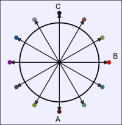

Simple Ferris Wheel.
The Simple Ferris Wheel JS Model asks the user to find find the net force on a rider at various times during the ride. This simulation has been used as a pre-lab and as a concept question at Davidson College.
The Simple Ferris Wheel JS Model was developed by Wolfgang Christian and Mario Belloni using the Easy Java Simulations version 5 (EJS 5) modeling tool. Although EJS is a Java program, EJS 5 can create stand alone JavaScript programs that run in almost any PC or tablet browser.
Information about EJS is available at: <http://www.um.es/fem/Ejs/> and in the OSP ComPADRE collection <http://www.compadre.org/OSP/>.